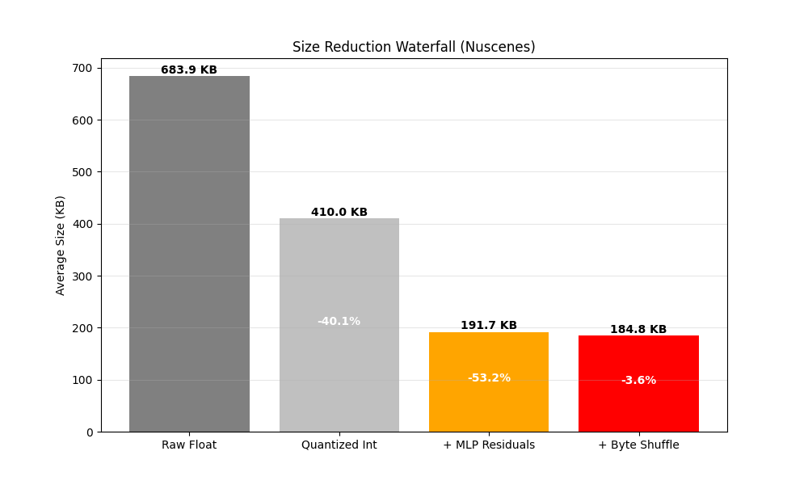
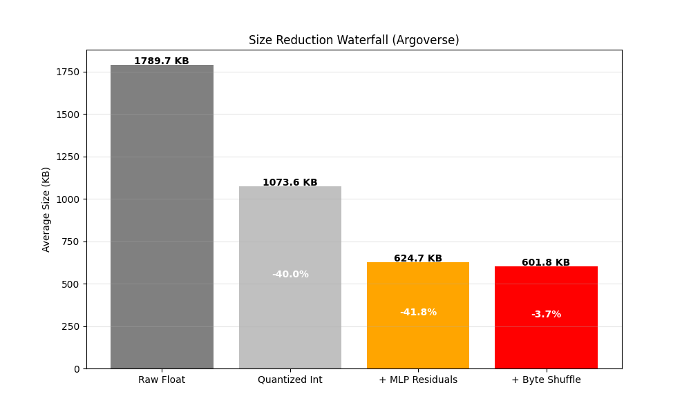
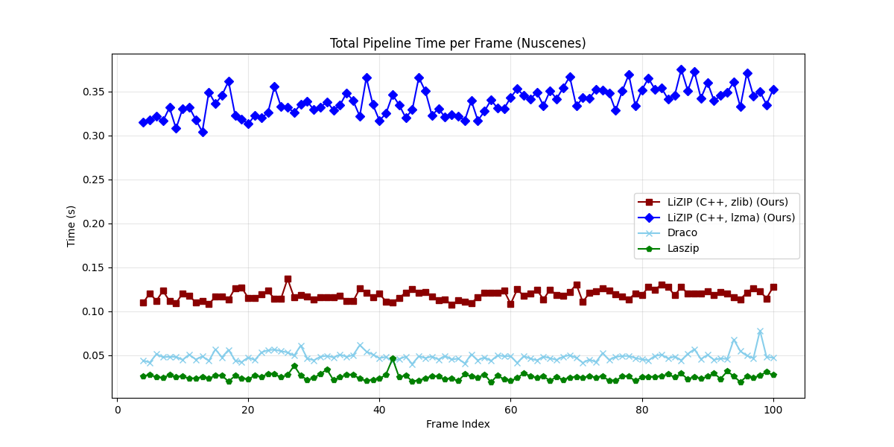
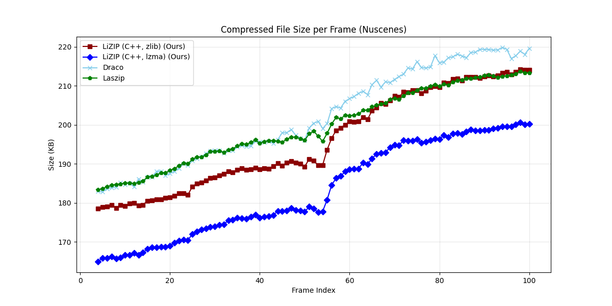
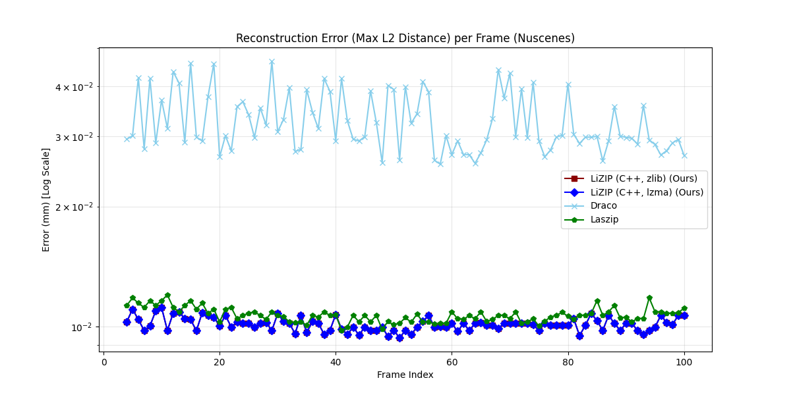
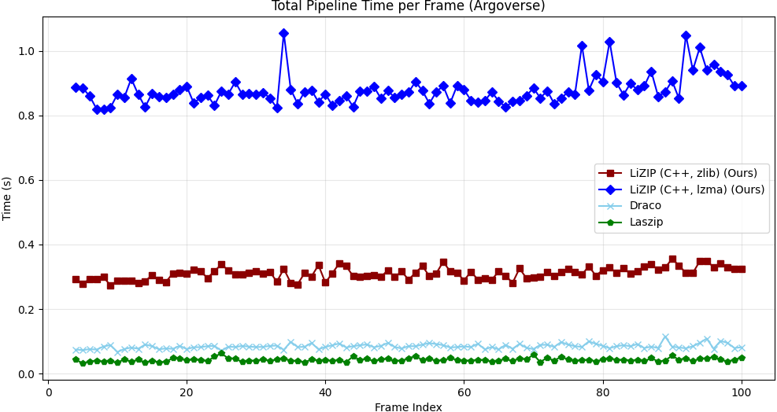
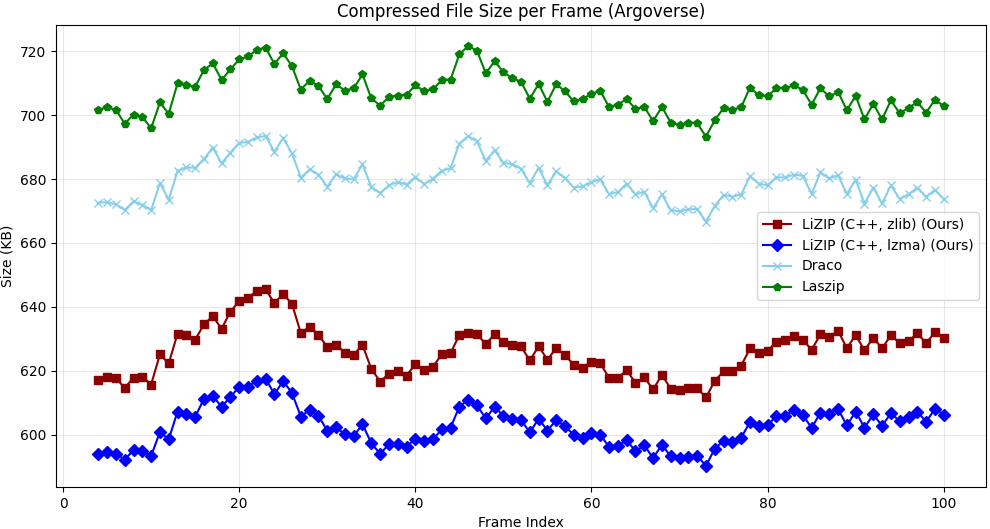
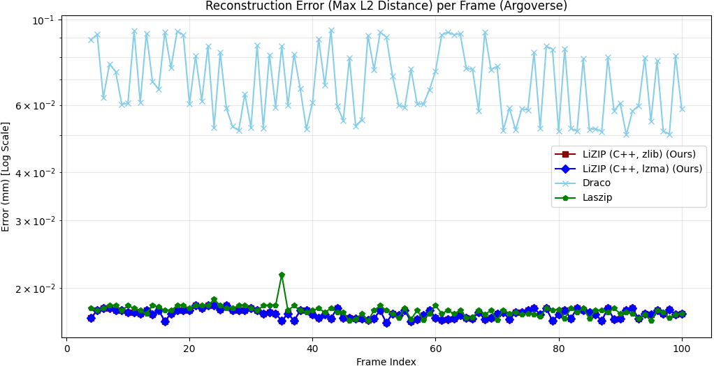

The massive volume of data generated by LiDAR sensors in autonomous vehicles creates a bottleneck for real-time processing and vehicle-to-everything (V2X) transmission. Existing lossless compression methods often force a trade-off: industry standard algorithms (e.g., LASzip) lack adaptability, while deep learning approaches suffer from prohibitive computational costs. This paper proposes LiZIP, a lightweight, near-lossless zero-drift compression framework based on neural predictive coding. By utilizing a compact Multi-Layer Perceptron (MLP) to predict point coordinates from local context, LiZIP efficiently encodes only the sparse residuals.
We evaluate LiZIP on the NuScenes and Argoverse datasets, benchmarking against GZip, LASzip, and Google Draco (configured with 24-bit quantization to serve as a high-precision geometric baseline). Results demonstrate that LiZIP consistently achieves superior compression ratios across varying environments. The proposed system achieves a 7.5%–14.8% reduction in file size compared to the industry-standard LASzip and outperforms Google Draco by 8.8%–11.3% across diverse datasets. Furthermore, the system demonstrates generalization capabilities on the unseen Argoverse dataset without retraining. Against the general purpose GZip algorithm, LiZIP achieves a reduction of 38%–48%. This efficiency offers a distinct advantage for bandwidth constrained V2X applications and large scale cloud archival.
(1) LiZIP achieves a 7.5%-14.8% reduction in compressed file size versus the industry-standard LASzip across NuScenes and Argoverse datasets.
(2) LiZIP outperforms Google Draco (24-bit precision baseline) by 8.8%-11.3% while maintaining near-lossless reconstruction error (≤0.017 mm), compared to Draco’s 0.033%-0.070%.
(3) Against the general-purpose GZip algorithm, LiZIP delivers a 38%-48% smaller output - a 3.8× compression ratio on a typical NuScenes frame (683.9 KB raw → 184.8 KB compressed).
(4) The C++ engine (AVX2 SIMD + OpenMP) encodes a full NuScenes frame in ∼75 ms on a single CPU, requiring no GPU at inference time. LiZIP achieves competitive compression ratios versus GPU-based deep learning methods while running entirely on CPU.
LiZIP processes a raw point cloud through a sequence of structured stages. The core step is a zero-drift quantization strategy: both encoder and decoder operate on identical integer representations, eliminating floating-point prediction drift. The pipeline is illustrated below.
PointPredictorMLP takes the quantised context window
and outputs a predicted coordinate. The network is evaluated in C++ from a
binary weight file — no Python runtime required.
.lizip file with a compact header.
The ablation below quantifies the contribution of each stage on a representative NuScenes and Argoverse frame:


PointPredictorMLP is a four-layer fully-connected network with ReLU activations.
Given a context window of k consecutive quantised points
(input dimension k × 3), it outputs a single predicted point (dimension 3).
The network is deliberately small: the optimal configuration (k=3, H=256) has a
model footprint of only 540 KB, enabling fast inference without a GPU.
A grid search over three context sizes (k = 3, 5, 8) and three hidden dimensions
(H = 256, 512, 1024) identified k=3, H=256 as the optimal configuration,
balancing compression ratio, reconstruction error, and encoding latency.
Both a PyTorch .pth checkpoint and a self-contained binary .bin
(LIZM format) are provided for each variant so the C++ engine requires no Python runtime.
Table I: Grid search results on NuScenes (100 frames). Latency (s) reported per frame. Size is mean compressed output. Error is mean Chamfer distance. Bold = selected optimal configuration.
| k | H | Latency (s) | Size (KB) | Error (mm) |
|---|---|---|---|---|
| 3 | 256 | 0.19 | 185.41 | 0.010 |
| 3 | 512 | 0.31 | 186.13 | 0.010 |
| 3 | 1024 | 1.06 | 185.42 | 0.010 |
| 5 | 256 | 0.18 | 186.17 | 0.010 |
| 5 | 512 | 0.33 | 184.88 | 0.010 |
| 5 | 1024 | 1.03 | 185.49 | 0.010 |
| 8 | 256 | 0.19 | 185.73 | 0.010 |
| 8 | 512 | 0.37 | 185.53 | 0.010 |
| 8 | 1024 | 1.23 | 184.50 | 0.010 |
k = context window size; H = hidden dimension. — indicates values not reported in the paper for those configurations.
LiZIP is benchmarked against GZip, LASzip, and Google Draco (24-bit quantization, high-precision geometric baseline) on two datasets. Encoding and decoding times are reported as mean ± std per frame. Positive Δ vs. LASzip means larger file (worse); negative means smaller (better).
| Method | Enc. (ms) | Dec. (ms) | Size (KB) | Δ vs. LASzip | Error (mm) |
|---|---|---|---|---|---|
| LiZIP (lzma) | 118±15 | 74±12 | 185.4±28 | −7.5% | 0.010 |
| LiZIP (zlib) | 42±8 | 33±5 | 198.2±29 | −1.1% | 0.010 |
| LASzip | 18±4 | 15±3 | 200.5±17 | — | 0.011 |
| Google Draco | 41±9 | 23±6 | 203.3±20 | +1.4% | 0.033 |
| GZip | 65±12 | 40±10 | 355.9±42 | +77.5% | 0.000 |



| Method | Enc. (ms) | Dec. (ms) | Size (KB) | Δ vs. LASzip | Error (mm) |
|---|---|---|---|---|---|
| LiZIP (lzma) | 255±25 | 160±20 | 602.3±6 | −14.8% | 0.017 |
| LiZIP (zlib) | 107±12 | 84±10 | 625.8±8 | −11.4% | 0.017 |
| LASzip | — | — | 706.5±6 | — | 0.018 |
| Google Draco | — | — | 679.2±6 | −3.9% | 0.070 |
| GZip | — | — | 973.5±13 | +37.8% | 0.000 |



LiZIP is trained on NuScenes only; Argoverse results demonstrate zero-shot generalisation without retraining.
| Method | Hardware | Lossy? | Compression vs. LASzip |
|---|---|---|---|
| VoxelContext-Net | GPU (RTX 2080Ti) | Yes | −43.7% |
| OctSqueeze | GPU | Yes | −15.0% |
| RCPCC | CPU (i7) | Yes (∼60× lossy) | — |
| MNeT | GPU (RTX 3090) | Yes | −8.4% |
| LiZIP (ours) | CPU (i7) only | Near-lossless (≤0.017 mm) | −14.8% |
LiZIP achieves competitive compression ratios against GPU-dependent deep learning methods while running entirely on CPU and maintaining near-lossless reconstruction fidelity.
The grid search (Table I) confirms that larger context windows (k) and wider hidden dimensions (H) yield diminishing compression gains while incurring significant latency costs. The optimal k=3, H=256 model encodes a full NuScenes frame in ∼75 ms (encode + decode average) on a commodity CPU, making it practical for embedded automotive hardware and edge V2X gateways.
The zero-shot Argoverse results (Table III) demonstrate that LiZIP generalises across sensor configurations and environments without retraining. The larger Argoverse frames (∼3× more points per scan) produce a proportionally larger compressed output but a higher compression gain versus LASzip (−14.8% vs. −7.5%), suggesting that the MLP predictor benefits from denser point distributions.
Against GPU-accelerated deep learning methods (Table IV), LiZIP is competitive with OctSqueeze (−15.0%) and outperforms MNeT (−8.4%) while requiring no GPU at inference time and maintaining near-lossless precision. The only methods that outperform LiZIP in compression ratio operate in a lossy regime.
Future work includes a TensorRT port for GPU acceleration, semantic-aware compression that allocates more bits to foreground objects, and online adaptation of the MLP to scene-specific point distributions.
git clone https://github.com/HWUDLabAIRoboticsReseach/LiZIP cd LiZIP pip install -r requirements.txt
# Python backend (default model: mlp_c3_h256) python main.py encode input.bin output.lizip # C++ backend with lzma for best compression ratio python main.py encode input.bin output.lizip --mode cpp --compression lzma # Custom model variant python main.py encode input.bin output.lizip --model models/grid_search/mlp_c8_h1024.bin --mode cpp
python main.py decode output.lizip reconstructed.bin --mode cpp
python src/utils/compare.py input.bin reconstructed.bin # Reports Chamfer distance, Hausdorff distance, p95/p99 nearest-neighbour error (mm)
python main.py benchmark --dataset nuscenes --frames 100 --mode dual
@article{shibu2026lizip,
title = {LiZIP: An Auto-Regressive Compression Framework for LiDAR Point Clouds},
author = {Shibu, Aditya and Karim, Kayvan and Zito, Claudio},
journal = {arXiv preprint arXiv:2603.23162v1},
year = {2026}
}